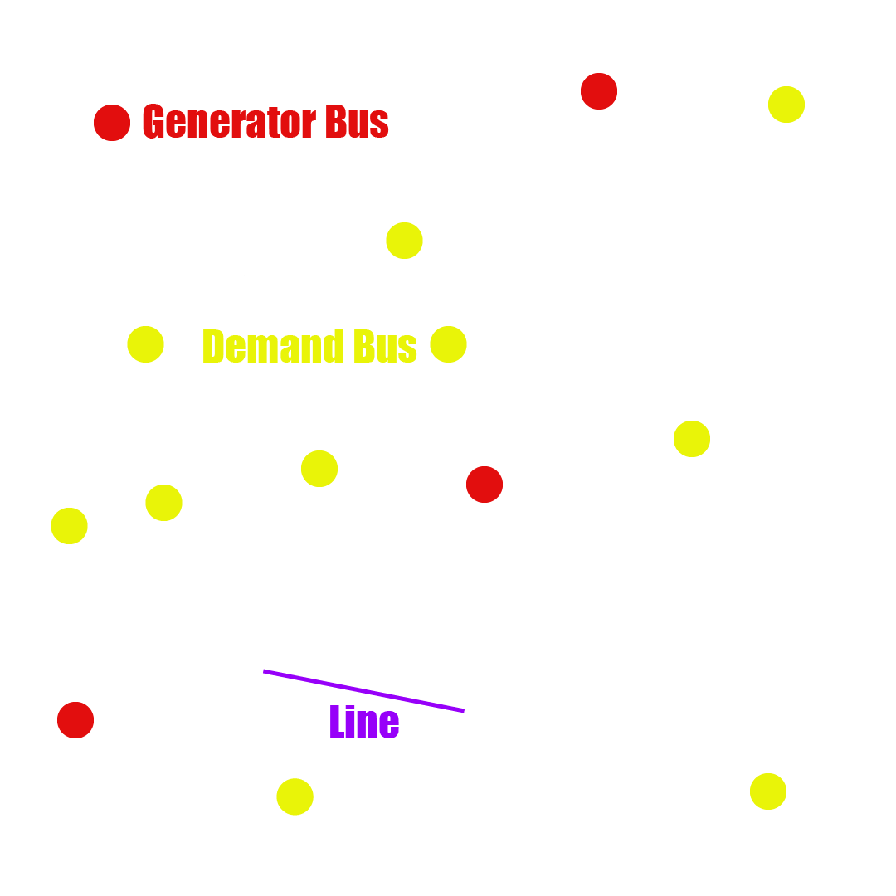

WHAT IS OPTIMAL POWER FLOW?
Optimal power flow is a long standing problem in electrical engineering.
The goal is to find the conditions such that a power system operates
at the lowest possible cost, while still satisfying a set of constraints.
Basic Terms
Bus
A bus is a node in a power system where different components, such generators,
load (demand), and transmission lines interconnect.
Generator
Generators are a type of bus that produce power for the rest of the system.
Each bus has a unique cost of generation, as well as limits on how much
it can produce, or change it's production in some amount of time.
Load
A load bus demands power (think houses, factories, etc). These have a minimum demand
that must be met, otherwise blackouts occur. The amount of power demanded by a
changes over time as power usage increases and decreases.
Line
Line's transmit power between nodes in the system. Each line has a maximum amount
of power that in can transfer. Lines are not 100% efficient, and will produce
some amount of loss when transmitting power over distance.

What are the constraints?
Line Capacity
Lines can only transmit so much power. Lines also lose power along the
way, increasing with distance. We need to ensure that each line is
delivering enough power to it's destination without exceeding it's
maximum allowable flow.
Generation
Each generator in the system has a minimum and maximum amount of energy
that it can generate. The goal is to have these generators operate at
the optimal level, such that cost is minimized.
Demand
For each generator, there are likely many other nodes (buses) that
demand power. If the minimum demand power for each of these buses
isn't met, it would be the equivalent of a blackout for the area
surrounding that node.